Case study 01 · CRM & operations
Real Estate PlatformCRM & operations
A Delhi property brokerage moved off spreadsheets and a 12-seat subscription CRM onto a self-hosted CRM and website the team now runs on, in 3 months (Jun–Sep 2026).
9 Sep
2026 production cutover, 3 months after work began
Jun–Sep 2026
147
organic leads (not paid ads) of 496 new
9 Sep – 6 Nov 2026
2,397
tasks completed
30 days to 22 Oct 2026
- Status
- Live, in daily use since the 9 Sep 2026 production cutover (the CRM sits behind a staff login)
- My role
- Operations & CRM Lead at the brokerage. I gathered the requirements, made the product decisions, directed the AI-assisted build, then ran the data migration, go-live and team training.
- Built with
- Laravel · Filament · Livewire · MySQL · self-hosted
- Integrations
- Knowlarity IVR and click-to-call · DLT SMS (Airtel IQ) · email · Meta Pixel and Meta Conversions API · Google Search Console API
- Timeline
- Requirements to go-live in 3 months (Jun–Sep 2026), then kept shipping

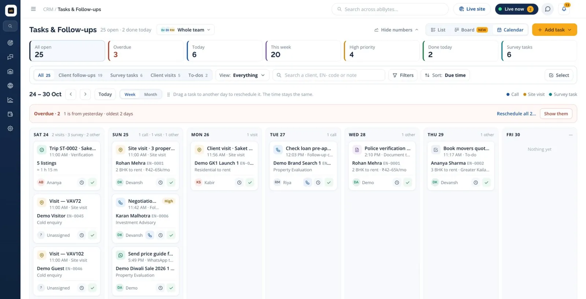

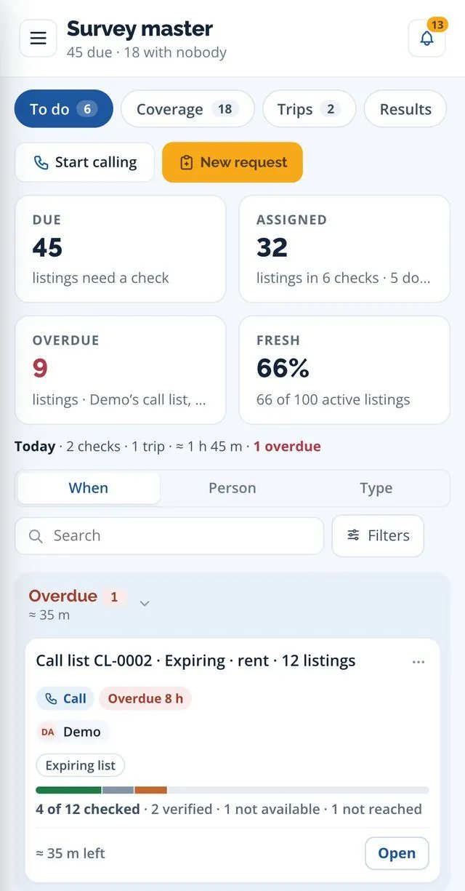
01 · In short
A Delhi real estate agency with its own online platform kept its leads in a rented CRM, its listings in spreadsheets and its new stock in two printed magazines. The brief was one system the brokerage owns, with inventory, leads, tasks and the website in one place, instead of seats it rents. It went live on 9 Sep 2026, and the team moved its daily work into it.
The starting point
A 12-seat subscription CRM.
About ₹1.44 L a year in seat fees (12 seats × ₹1,000 a month), with the lead records and their history held in the vendor’s system.
Listings in spreadsheets.
Inventory sat in workbooks, apart from the leads. The first load into the new system brought across 8,541 listings and 3,237 photos (2026).
Two monthly print magazines.
Each issue went PDF → Word → a desktop parser → Excel fixes by hand. The Sept 2026 issues ran to 10,639 printed lines.
02 · What it does: One self-hosted CRM. Eight parts that feed each other.
Inventory
12,152 live listings (22 Oct 2026), 98% of them loaded by import and kept current by importers, one of which reads the magazine PDFs.
Website
6,564 listings published straight from the CRM, and 7,474 URLs in the public sitemap, 6,561 of them listing pages (both 6 Nov 2026). The sitemap refreshes daily.
Roofie inbox
Website chats from Roofie, a scripted enquiry assistant, land here; a person takes over in one click.
Leads & enquiries
One screen per lead: tasks, property search, buckets, verifications, engagement and timeline. 6,089 migrated (30 Jul 2026); 496 new leads, 9 Sep – 6 Nov 2026.
Listing verification desk (“Survey master”)
Every listing has a freshness clock (rent 30 days, sale 45). When it runs out, the listing becomes a check (a call, a visit or a photo shoot), tracked live, with a separate screen for calling owners. Field trips (a capability) are followed stop by stop in a list, board or week calendar.
Tasks & calling queues
Follow-ups, site visits and listing checks in one list, board and calendar; queues and calling sessions for enquiry and owner calls.
Matching
Every night, new listings are scored against open briefs; each brief gets a shortlist ranked by fit, showing how fresh each listing’s check is.
Telephony, SMS and dues
Knowlarity click-to-call and DLT SMS (Airtel IQ) are connected to the CRM. Deals and brokerage dues are tied to the client’s requirement.
03 · What makes it different
- People decide only the unsure lines. The magazine reader follows each printed section, understands print shorthand (‘850F’ is an area in sq ft, not a floor) and flags a sale price that reads like a rent. Across two issues, 274 human decisions covered 21,182 printed lines.
23 Oct 2026
- It reads desk shorthand. ‘FF’ is first floor, not ‘fully furnished’; plot sizes in square yards are converted before comparing; the website, Roofie and staff search share one parser.
- One freshness rule. Rent 30 days, sale 45: the same clock drives the verification desk, property matching and the website’s Verified badge.
- A missed call never unpublishes a listing. The call comes back in about 2 hours, and after 3 misses (a setting) it goes to a person. One owner, one call: a landlord’s listings stay together.
- The timeline writes itself. 70% of the 14,297 timeline entries in the 30 days to 22 Oct 2026 were written by the system, not typed (64% on 5 Oct). Outgoing texts never count as contact, so a mass SMS can’t make leads look worked.
- Budget is a band, the way brokers negotiate. Within ±10% is a fit and ±20% still counts as close; a landlord’s tenant preference lowers the score but never hides the listing.
- Channel is kept apart from capture. Every enquiry carries “How they found us”, so a visitor who googled and then used Roofie still credits Google search.
04 · What the business can configure: Settings, not code.
What the business changes without a developer, from screens inside the CRM.
- Survey master
- Colony scoring, who checks what, minutes per call.
- Roles & permissions
- Grant to a role, or override for one person.
- Vocabularies
- Every dropdown word, shared by briefs and listings.
- Locality synonyms
- CR Park finds Chittaranjan Park; admins edit the list.
- UTM link builder
- Tagged links to any page or listing, saved by name.
- Website pages
- Section-block pages, menus, journal, FAQ, guides.
- DLT SMS templates
- Named blanks filled from the record; only DLT-registered templates send, and nothing goes out 7 PM – 9 AM IST.
- WhatsApp messages
- Editable owner messages for click-to-chat (no API).
- Notifications
- One switch per alert type: bell, pop-up, push.
- Calling queues
- A live audience (class, rent/sale, area, source, lead score, stage, last contact) or a fixed list; a shared pool, one caller or several; priority by due label.
- Click-to-call
- An admin turns dialling on per person.
- Agreements
- Templates importable from Word (capability).
05 · Key screens
Screens: white-labelled demo copy, fictional data, unless marked live.
01Inventory in

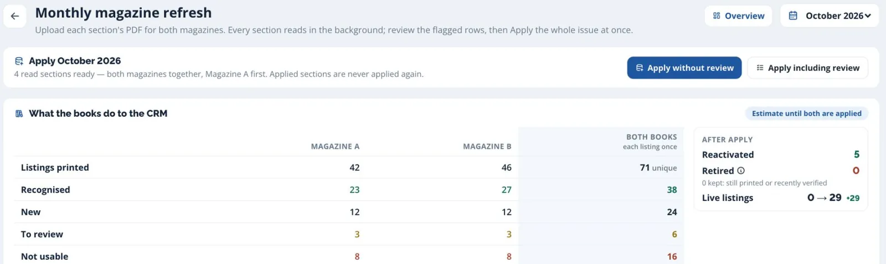

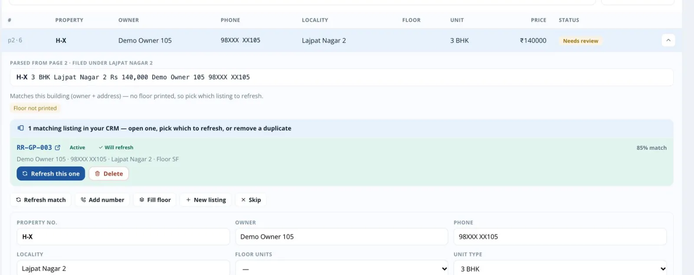

02Listing verification

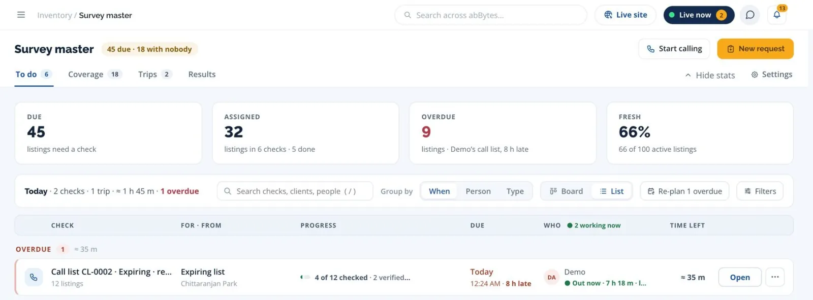

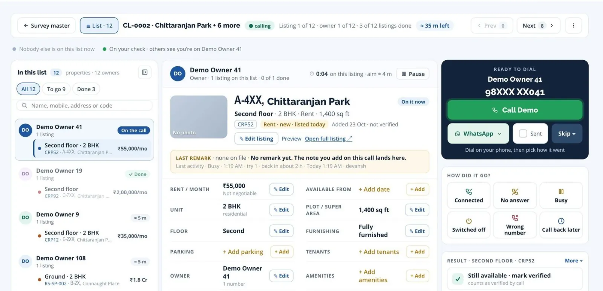

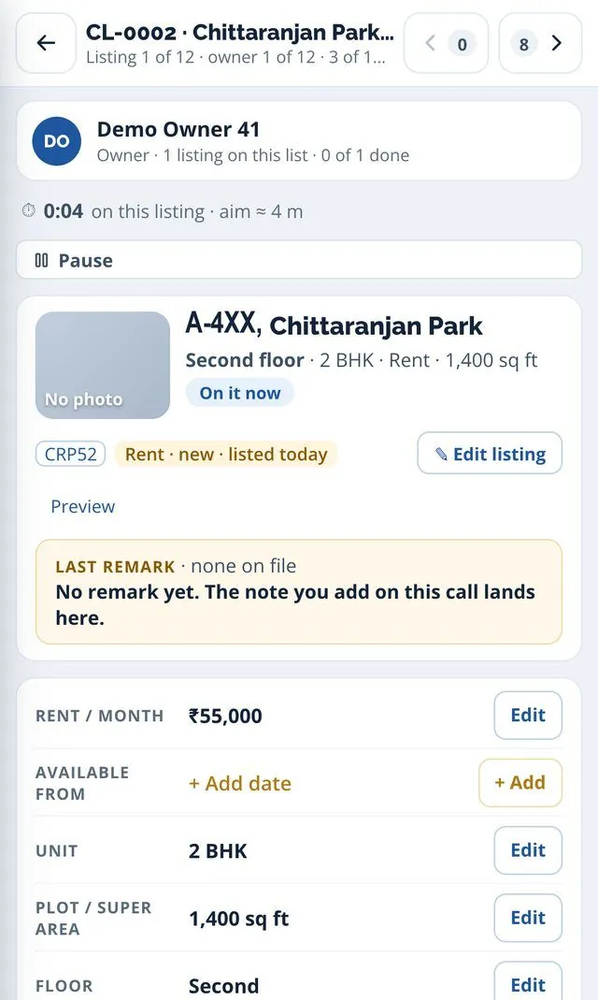


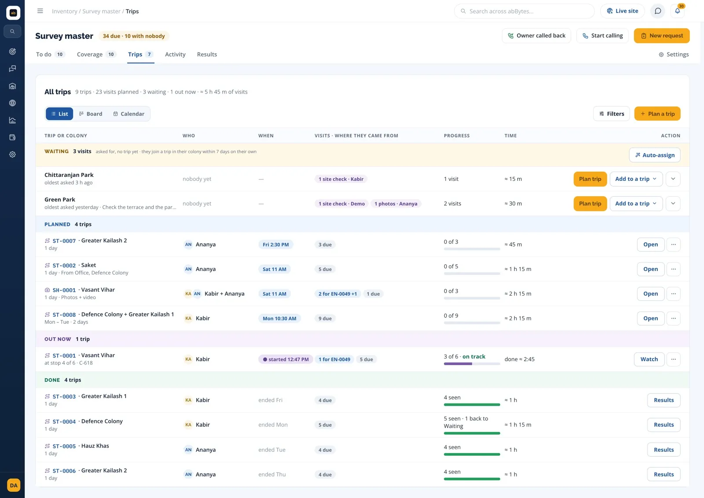

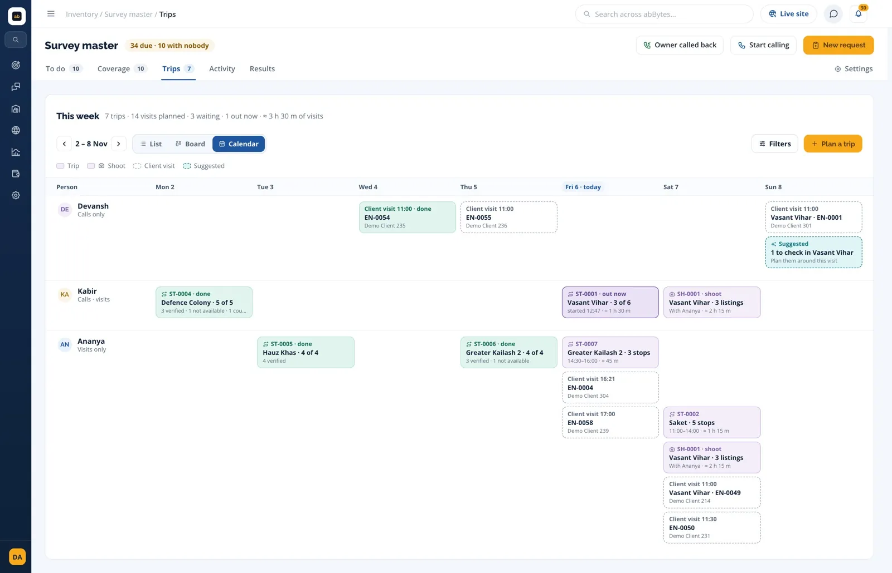

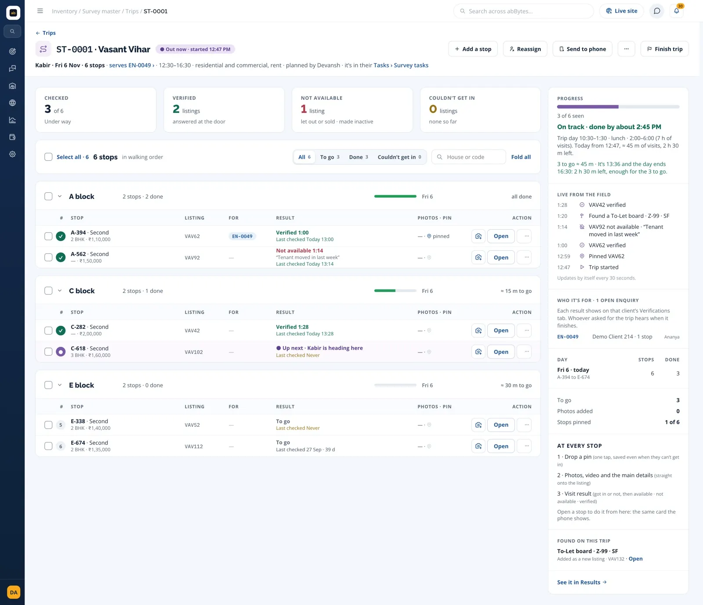

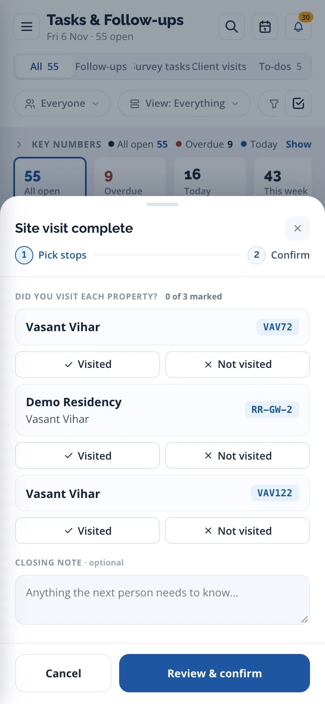
03People & calling

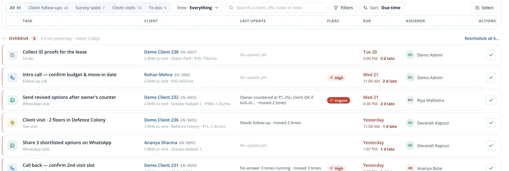

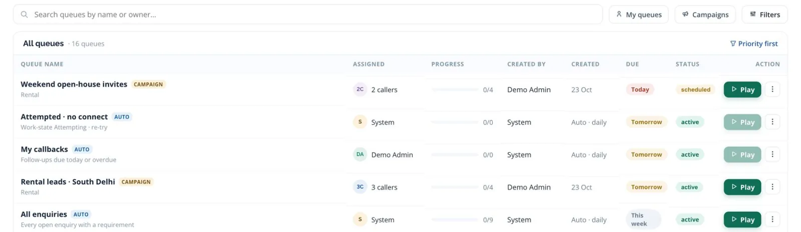

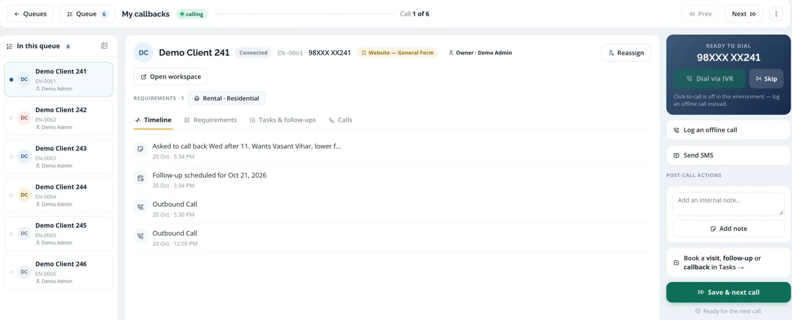
04Clients & matching


06 · Results, dated
The team moved its daily work into the system.
Client-work tasks completed per week
ISO weeks 36–42, 2026 · read 22 Oct 2026
| Week | Count |
|---|---|
| W36 (31 Aug) | 142 |
| W37 (7 Sep) | 121 |
| W38 (14 Sep) | 137 |
| W39 (21 Sep) | 199 |
| W40 (28 Sep) | 505 |
| W41 (5 Oct) | 365 |
| W42 (12 Oct) | 334 |
157
screens in the CRM (distinct pages a person can open; modals and panels not counted)
Counted from the code · 6 Nov 2026
2,397
tasks completed (1,608 client work + 789 listing checks); 1,014 in the 30 days to 5 Oct
30 days to 22 Oct 2026
6,089
legacy lead records and 27,516 history events in one import, 0 rejected
30 Jul 2026
16,441
listings refreshed, 3,101 added and 4,128 retired from 2 magazine issues; 7,844 live from magazines
Dashboard · 23 Oct 2026
2,248
property↔lead matches (141 requirements × 827 listings); 1,887 on 5 Oct
30 days to 22 Oct 2026
1,644
listings verified (1,099 on 5 Oct); 789 of 815 listing checks done since the desk opened on 9–11 Oct
To 22 Oct 2026
1,448
owner calls in the calling screen’s first 16 days: 6 callers, 765 owner numbers, 490 calls connected
21 Oct – 5 Nov 2026
1,362
follow-up call tasks completed (not all from queues)
30 days to 6 Nov 2026
147 of 496
new leads came organically, not from paid ads
9 Sep – 6 Nov 2026
58% vs 23%
of organic leads now have a qualified requirement (85 of 147), against Meta-ad leads (78 of 334)
Read 6 Nov 2026
261
enquiries carry an ad-campaign (UTM) tag, near zero before Oct
To 22 Oct 2026
85%
of 119 Roofie chats never needed an agent (101); 35 became or joined an enquiry
7 Sep – 6 Nov 2026
Built, not yet used
Capabilities, not results: SMS campaigns & automations (0 sent) · deal approvals (0 requests) · field trips & visit requests (0) · requirement auto-assignment (off), all to 22 Oct 2026 · calling-pool claim (0 uses to 6 Nov 2026) · inbound IVR capture, screen-pop and recording. WhatsApp is click-to-chat links only. The first 2 deals were recorded as won in Oct 2026; payment-reminder texts were sent 4 times, by hand (to 22 Oct 2026).
Read-only production queries, 5, 22 and 23 Oct and 6 Nov 2026. “Organic” = the CRM’s own source category: everything except paid ads, portals, walk-ins and manual entries. By its channel logic 2 website leads had clicked a Meta ad, so 145 are not linked to any ad (9 Sep – 6 Nov 2026). Only the 30 organic website and Roofie leads (12 from Google search; 9 Sep – 6 Nov 2026) can be credited to the website or SEO. Instagram and WhatsApp leads are messages logged by staff, and the 33 inbound-call leads in the same window were logged by staff, not captured by the IVR.
07 · How it was built: I made the product calls and directed AI coding tools.
- Requirements & product decisions
- AI-assisted builddirecting AI coding tools
- Tested every changebefore it shipped
- Migration, then go-live30 Jul · 9 Sep 2026
- Training and iteratingwith the team
I’ve been the brokerage’s Operations & CRM Lead since Nov 2022, and I helped grow the team from 3 to 15. Shipping didn’t stop at go-live: the verification desk opened on 9–11 Oct and the owner-calling screen on 21 Oct 2026. I also set up the cloud telephony (IVR) account with the vendor; click-to-call and DLT SMS are connected to the CRM. Earlier versions of the brokerage’s website were built by outside teams I coordinated.
StackLaravel · Filament · Livewire · Alpine.js · Tailwind CSS · MySQL · Knowlarity cloud telephony (IVR, click-to-call) · Airtel IQ DLT SMS · email · Meta Pixel + Conversions API · Google Search Console API · self-hosted · AI-assisted build
08 · Links & PDF
- Project showcasegithub.com/abBytes-sudo/real-estate-crm-showcase
- Interactive demoabbytes-sudo.github.io/real-estate-crm-showcase
- The public websiteCase study 02 · Real Estate Platform — public website